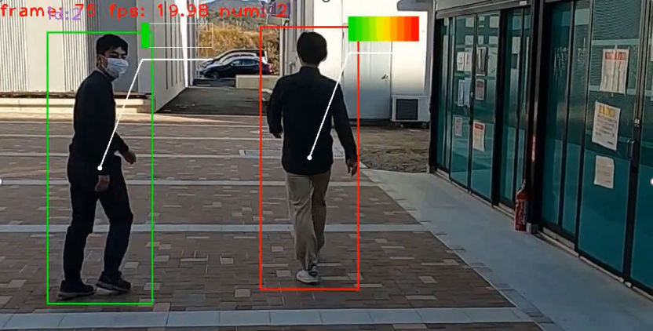

<body>
  <h1>光岡　陽 / MITSUOKA　AKIRA</h1>
  <div>
    <h3>経歴 | History</h3>
    <table>
      <tbody>
        <tr>
           <td>2021.04 - 現在:</td>
           <td>
             岐阜大学 自然科学技術研究科
             <br>
             知能理工学専攻 知能情報学領域
           </td>
         </tr>
         <tr>
           <td>2017.04 - 2021.03:</td>
           <td>
             岐阜大学 工学部
             <br>
             電気電子・情報工学科 情報コース
           </td>
         </tr>
      </tbody>
    </table>
    <br>
      </tbody>
    <h3>研究室 | Laboratory</h3>
    〒501-1193 <br>
    <a href="https://goo.gl/maps/DeopKVi3DdGBwfHF6">岐阜県岐阜市柳戸1-1</a><br>
    <a href="http://www.cv.info.gifu-u.ac.jp/">岐阜大学 工学部 電気電子・情報工学科 加藤研究室</a>
    <br><br>
        
  </div>
  <div>
    <h3>研究 | Research</h3>
    <h4>深層学習を用いた動画像中の歩行者の行動認識</h4>
        <ul>
          <li>気づきの認識</li>
          <li>時間的階層ラベルを用いた行動認識</li>
        </ul>
    
    
    <br><br>
    
    <h3>発表 | Publication</h3>
    <br>[1] 光岡陽, 相澤宏旭, 加藤邦人:"深層学習による追跡と行動認識を用いた歩行者の気付き検出", 画像応用技術専門委員会,サマーセミナー2021, pp.31-34(2021.9)<br>
    <br>[2] 光岡陽, 相澤宏旭, 加藤邦人, "End-to-end な人物追跡と行動認識を用いた歩行者の気づき認識手法", ビジョン技術の実利用ワークショップ ViEW2021, IS3-12, pp.326-332, 2021.12.3<br>
    
    <h3>受賞 | Award</h3>
    <br>2021 岐阜大学　卒業式における学業成績優秀者表彰にて表彰<br>
    
    
    <br><br>
  <script async defer id="github-bjs" src="https://buttons.github.io/buttons.js"></script>
